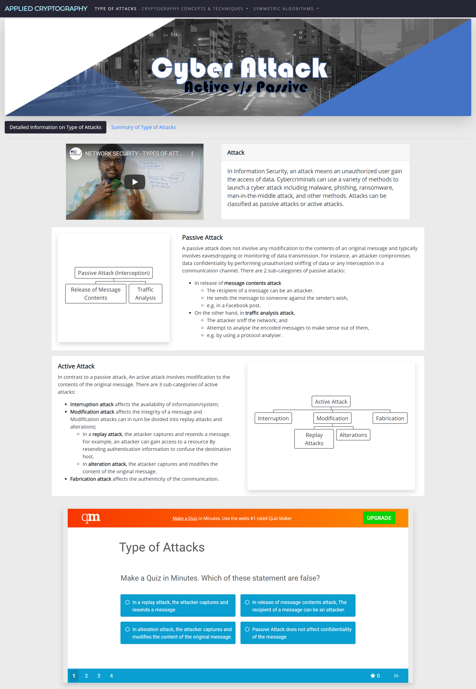
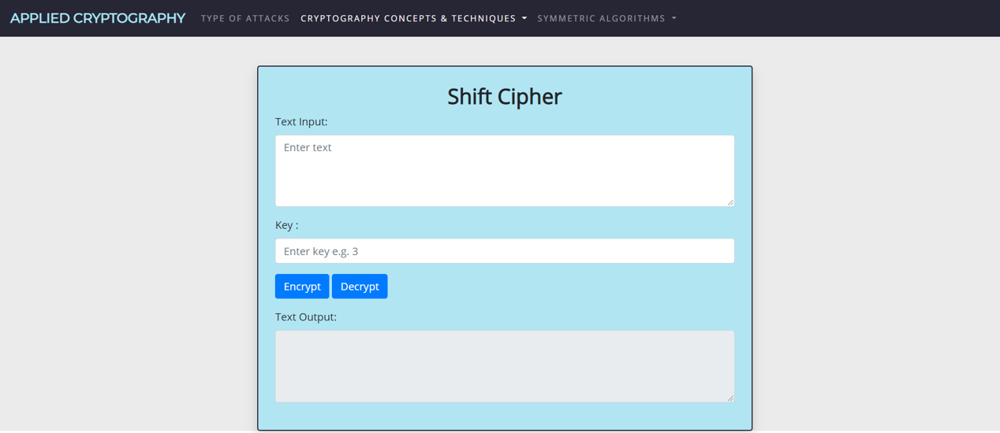

Applied Cryptography Project (Web App)
Project information
- Category: Web Application
- Purpose: School Project
- Project Date: 06/2020 - 08/2020
- Result: A Grade [Score >= 80%]
- Description:
Applied Cryptography Project is a Web Application to enhance the learning of selected cryptography topics and provide tools for encryption and decryption of the cryptography algorithm chosen.
Project Details
Background Information :
Applied Crypto Assignment Project was a project completed as part of my Nanyang Polytechnic Year 2 Semester 1 Applied Cryptography Module individual assignment.
I was tasked to create a Python application with e-learning materials to enhance the learning of selected cryptography topics and a set of cryptography tools.
I developed a Flask Web Application with the following features :
- E-learning materials on selected cryptography topic : Type of Attacks which contains a video, tree diagram, and a quiz related to the topic.
- Cryptography tools including :
- Advanced Encryption Standard (AES)
- CaesarCipher
- Data Encryption Standard (DES)
- Diffie-Hellman Key Exchange
- Mono Alphabet Cipher
- Rail Fence Technique
- Simple Columnar Transposition Cipher
- Vername Cipher
Image Below shows the Type of Attacks page

Image Below shows the CaesarCipher page

Challanges
-
Challange
Technical Difficulties to develop the tools from scratch while having only the theory on how the tools work
Solution
I researched on how the algorithms work and look for existing solutions to understand how I could implement it in Python
Conclusion
Overall, this project was completed smoothly without many difficulties as I already had experience developing a web application with Flask.
This project's key takeaway is having a deeper understanding of how a cryptography algorithm works by practical.
Developed with:
- Python
- Flask
- HTML
- CSS
- JS